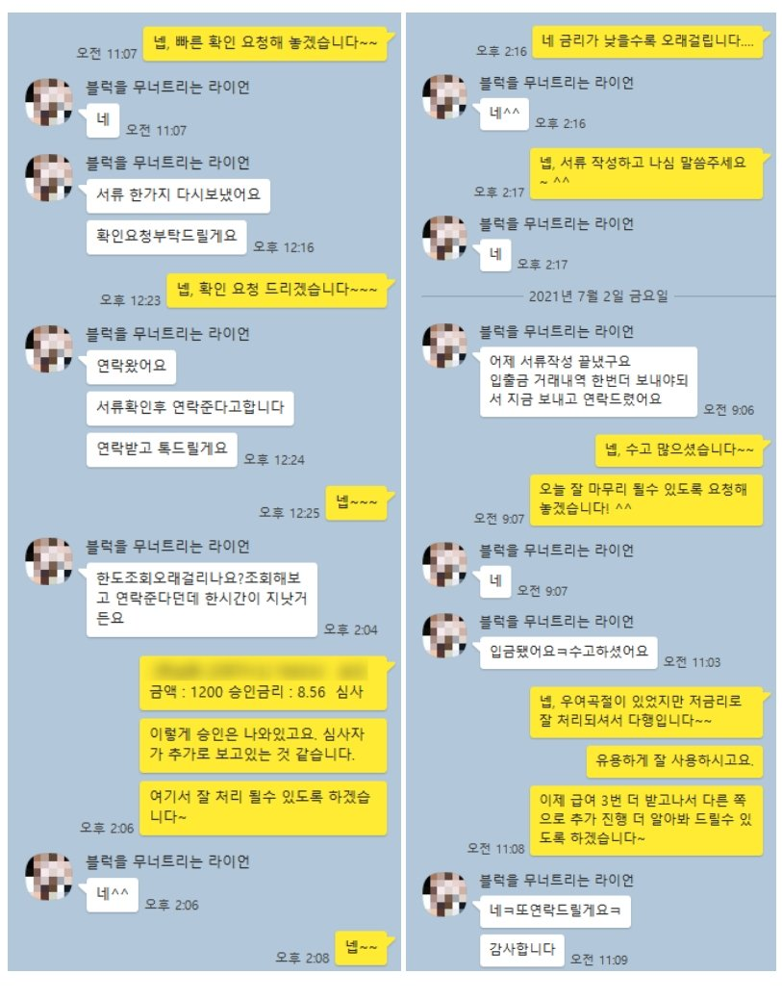

대부업 사용건수 과다 & 4대보험 미가입 직장인 1200만원 승인 사례
안녕하세요? 뱅크앤론 조영우 이사입니다~
오늘은 4대보험 미가입 직장인 고객분께 통장급여 3개월치 증빙 조건으로 대출 진행해 드린 사례에 대하여 공유 드리겠습니다.
해당 고객님의 대략적인 프로필은 아래와 같습니다.
- 30대 여성
- 요식업체 3개월 근무중
- 4대보험 미가입, 급여통장 월 180만원씩 3회 수령
- 기대출 : 대부업 5건 1500만원
몇달전 상담을 드렸으나 그때는 무직에 최근 차입한 대부업 건수 과다하여 진행이 불가하였습니다. 이후 고객님이 취업하여 급여 3개월 수령하시고 이번에 대출금 1200만원 진행드려 일부 채무 통합 및 여유자금 마련할 수 있게 되셨습니다.
월급여액에 편차가 있고, 과거 손실상각이력 그리고 거주지 압류 등으로 인해 일부 금융사는 부결이 되었으나 가능한 곳으로 재차 접수하여 좋은 결과로 마무리 드렸습니다.
아래는 고객님과 실제 대화한 내용이니 참고 부탁 드리겠습니다.
